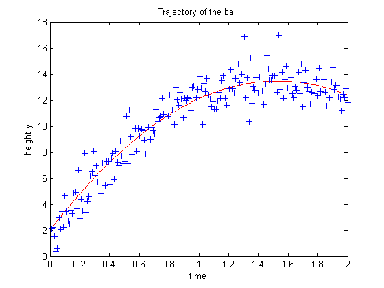
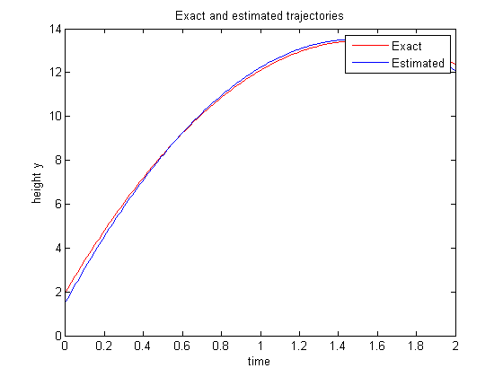

Contents
clear all; close all;
Part 1.1 - Simulating A Trajectory
g = 9.81;
v_0 = 15;
h_0 = 2;
t = linspace(0,2,200);
plot(t,-(g/2) * t .^ 2 + v_0 * t + h_0,'r');
title('Trajectory of the ball');
xlabel('time');
ylabel('height y');
load noisyTrajectory
hold on
plot(t,yn,'+b');

Part 1.2 - Estimating the parameters from a noisy trajectory
A = [ones(size(yn)) t' t' .^ 2];
est = A\yn
est_g = abs(est(3)*2);
est_v_0 = est(2);
est_h_0 = est(1);
hold off
plot(t,-(g/2) * t .^ 2 + v_0 * t + h_0,'r');
hold on
plot(t,-(est_g/2) * t .^ 2 + est_v_0 * t + est_h_0,'b');
legend('Exact','Estimated');
title('Exact and estimated trajectories');
xlabel('time');
ylabel('height y');
ssdiff_exact = sum((yn' - (-(g/2) * t .^ 2 + v_0 * t + h_0)) .^ 2);
ssdiff_est = sum((yn' - (-(est_g/2) * t .^ 2 + est_v_0 * t + est_h_0)) .^ 2);
ssdiff_exact
ssdiff_est
if ssdiff_est < ssdiff_exact
disp('The estimated difference is smaller because the estimated model is based on the data we are comparing it to.');
end
est =
1.5429
16.1004
-5.4128
ssdiff_exact =
237.6506
ssdiff_est =
232.2389
The estimated difference is smaller because the estimated model is based on the data we are comparing it to.

Part 1.3 - Identify the planet
load planetData
planets = {'Saturn','Moon','Earth','Pluto','Sun','Mercury','Mars','Jupiter'};
planets_g = [11.2 1.63 9.81 0.61 274.1 3.7 3.73 25.9];
planets_abbr = {'st','nd','rd','th','th','th','th','th'};
for i = 1:8
planet = A\yAN(:,i);
planet_g = abs(planet(3)*2);
fprintf('%-7s is the %d%s planet (column) with an estimated (observed) gravity of %7.3f and actual gravity of %6.2f\n',...
planets{i},i,planets_abbr{i},planet_g,planets_g(i));
end
Saturn is the 1st planet (column) with an estimated (observed) gravity of 11.096 and actual gravity of 11.20
Moon is the 2nd planet (column) with an estimated (observed) gravity of 1.625 and actual gravity of 1.63
Earth is the 3rd planet (column) with an estimated (observed) gravity of 9.897 and actual gravity of 9.81
Pluto is the 4th planet (column) with an estimated (observed) gravity of 0.547 and actual gravity of 0.61
Sun is the 5th planet (column) with an estimated (observed) gravity of 274.115 and actual gravity of 274.10
Mercury is the 6th planet (column) with an estimated (observed) gravity of 3.738 and actual gravity of 3.70
Mars is the 7th planet (column) with an estimated (observed) gravity of 3.739 and actual gravity of 3.73
Jupiter is the 8th planet (column) with an estimated (observed) gravity of 25.791 and actual gravity of 25.90